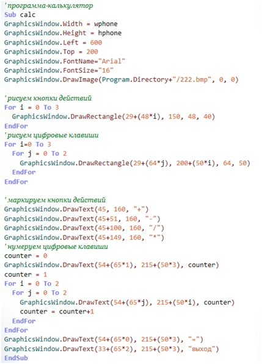

|
До сих пор каждую новую программу мы писали в новом окне Small Basic. Это удобно и легко при отладке, но так мы не сможем сделать полноценный «телефон». Ведь на нем программы должны запускаться по клику на иконке на рабочем столе, а не по клику по файлу проекта Small Basic.
Для встраивания написанных нами программ в «телефон», нужно научиться работать с подпрограммами.
Объявление подпрограммы в общем виде выглядит так:
Sub Имя
' здесь инструкции подпрограммы
EndSub
Слово Sub (от англ. subprogram — подпрограмма) показывает, что далее следуют инструкции подпрограммы, слово EndSub отмечает конец подпрограммы. Идентификатор Имя определяет имя подпрограммы.
Подпрограммы также логично использовать в больших программах, когда вам часто нужно выполнять одни и те же действия. Вот пример оформления написанного нами в прошлом уроке интерфейса калькулятора.

Вызвать подпрограмму очень просто. Нужно всего лишь указать ее имя следующим образом:
calc()
Скобки означают, что это не переменная, а именно вызов подпрограммы.
Сам код подпрограммы может быть написан в любом месте вашей программы, при вызове подпрограммы это не имеет значения.
Теперь давайте вернемся ненадолго к нашему пользовательскому интерфейсу. Нам нужно связать клик по иконке приложения в «телефоне» с запуском подпрограммы. Работать с подпрограммами мы уже научились, осталось узнать, как отслеживать положение и действия мыши.
Программа Small Basic может воспринимать следующие события: нажатие кнопки мыши, отпускание кнопки мыши, перемещение указателя мыши, нажатие клавиши клавиатуры.
У каждого события есть имя:
Событие Описание
MouseDown Нажатие кнопки мыши
MouseUp Отпускание кнопки мыши
MouseMove Перемещение указателя мыши
KyeDown Нажатие клавиши клавиатуры
KeyUp Отпускание нажатой клавиши клавиатуры
Для того чтобы программа реагировала на событие, необходимо написать процедуру обработки этого события и указать имя этой процедуры в качестве обработчика события. Процедура —обработчик задается путем присвоения значения соответствующему свойству:
Часто программе необходима информация, в какой точке окна находился указатель мыши в момент нажатия кнопки мыши. Получить информацию о положении указателя мыши можно, обратившись к свойствам GraphicsWindow.MouseX и GraphicsWindow.MouseY. Именно этими свойствами нам и нужно воспользоваться. Давайте напишем условие вызова подпрограмм. Она должна вызываться, если будет произведен клик по иконке соответствующего приложения. Координаты иконки мы знаем, так что можем записать код.
Для начала проассоциируем с кликом мышки подпрограмму, которая будет его обрабатывать. GraphicsWindow.MouseDown = mouse_click
Теперь опишем процедуру запуска.
Sub mouse_click
' определяем координаты
mouse_x = Mouse.MouseX - GraphicsWindow.Left
mouse_y = Mouse.MouseY - GraphicsWindow.Top
' запускаем калькулятор
If mouse_x > 133 And mouse_x < 212 And mouse_y >190 and mouse_y < 270 then
calc()
Таким же образом можно прописать запуск для всех остальных программ, которые вы решите встроить в свой эмулятор.
|